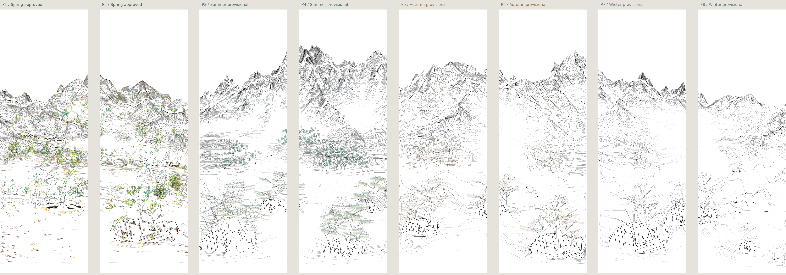
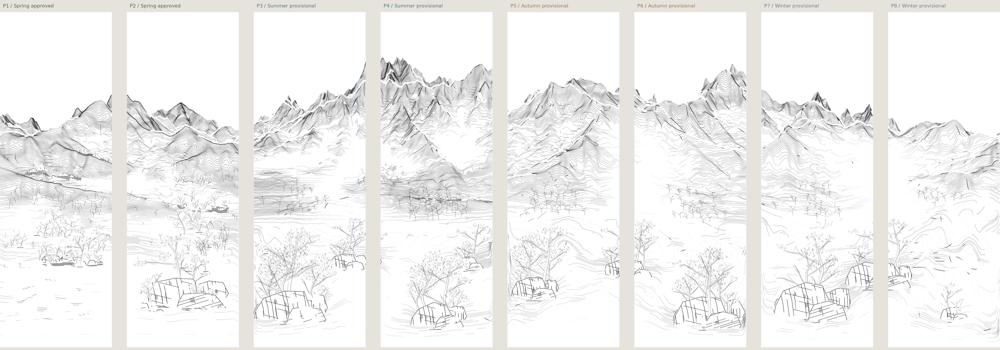
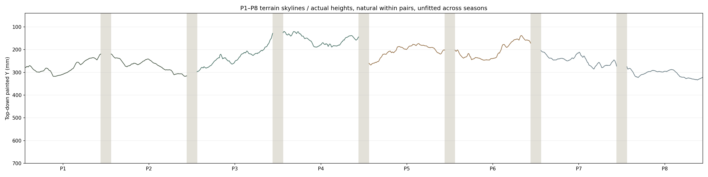
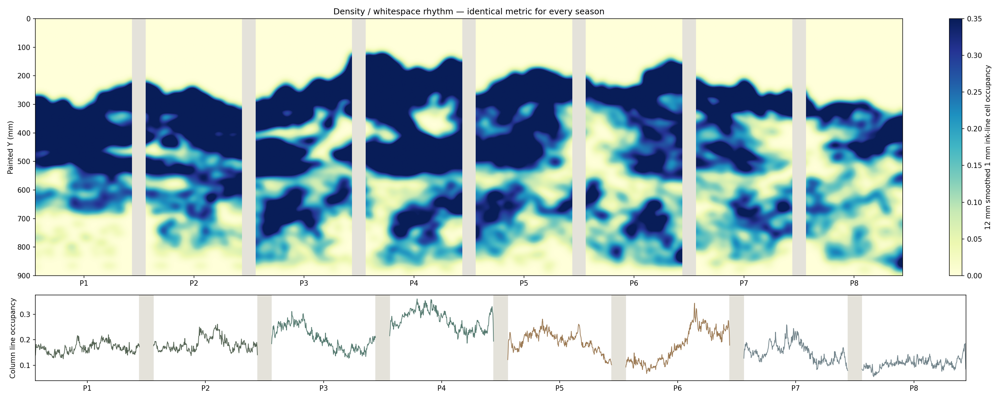
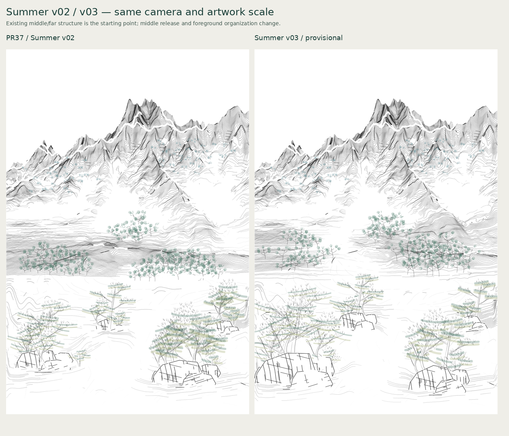
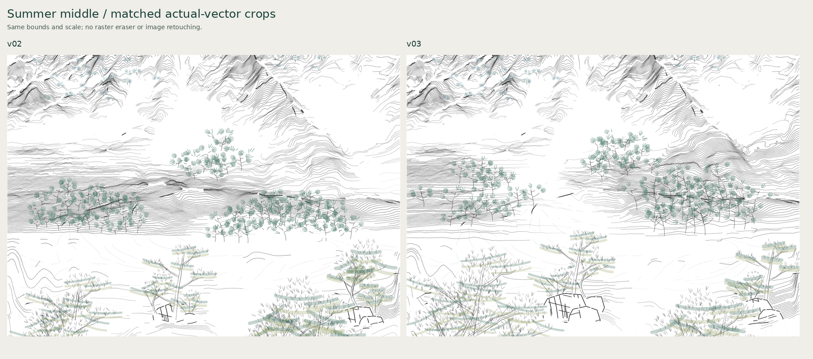
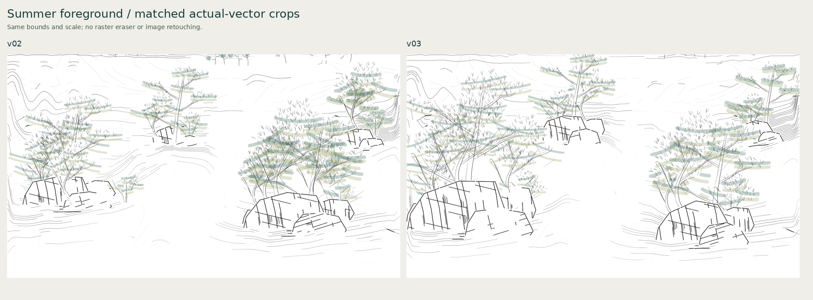
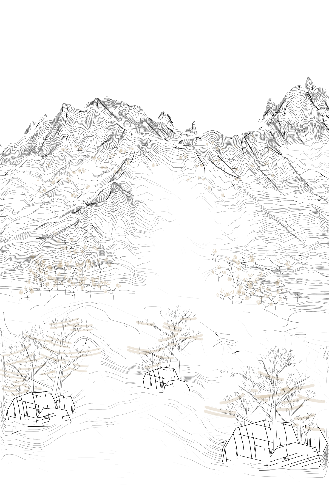
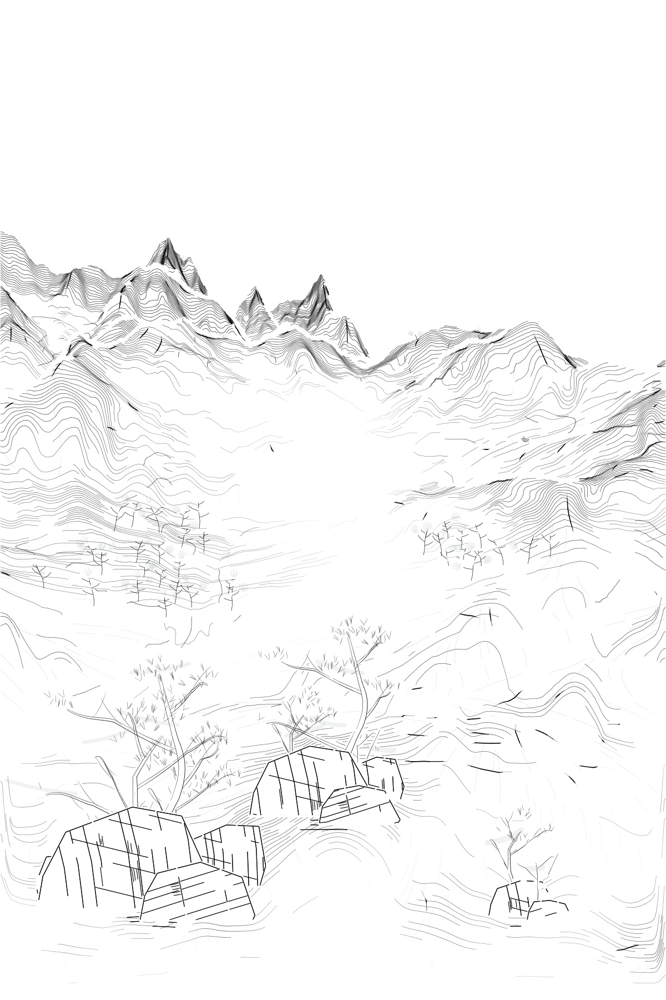

Technical review candidate from PR37. Artistic acceptance and physical foreground validation remain open.
Approved Spring is unchanged. Each seasonal pair is independent; skyline relationships are provisional and unfitted. Display gaps are 40 mm. No G-code or final physical palette is included.
Frozen Spring and three actual seasonal pairs; 40 mm installation gaps.

Canonical ink only, at the same display scale.

Natural within pairs, provisional and unfitted across seasons.

Ink-line cells only; this is not physical wet coverage.

Same camera; actual new omission and foreground group organization.

Matched actual-vector crops.

Larger native groups and shared source supports.

Unequal thinning and exposed structure; provisional color.

Residual pine, incomplete crowns and a long right rest.

JSON preserves complete variable profiles; SVGs show open mean-width centerlines. New seasonal outputs use independent canonical geometry, not recolored Spring.
Middle/far contour drawing appears relatively stable; foreground is less physically verified. A different foreground brush strategy may be needed. This is a production consideration and does not itself change canonical geometry.